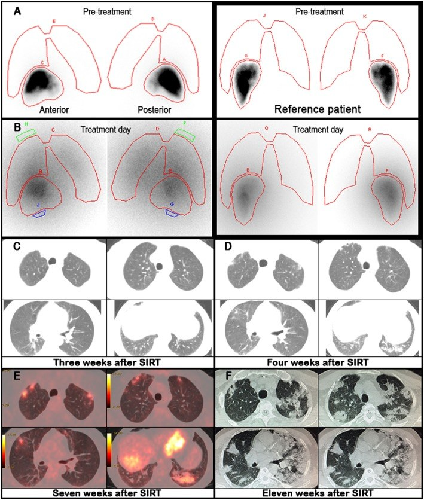
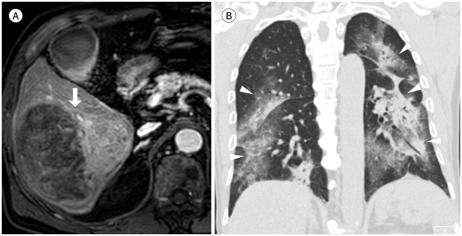
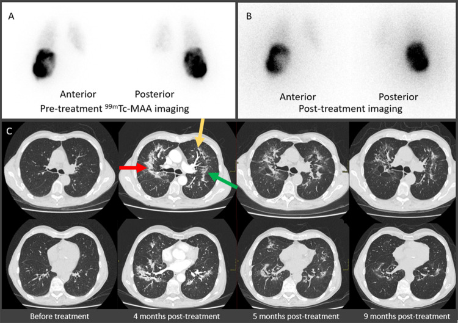

1806 — Viêm phổi do xạ sau TARE (radiation pneumonitis after transarterial radioembolization): kính mờ quanh rốn phổi, ngưỡng liều phổi và cái bẫy "LSF thấp"
Tags: pattern:kinh-mo pattern:dong-dac pattern:vien-phoi-do-xa vung:phoi score:lung-dose protocol:CT-nguc protocol:MAA-scout incidentaloma:khong
Mức chắc chắn (certainty): tổng hợp y văn (literature synthesis) — tổng quan biến chứng TARE 2025 (PMC12328914), 2 ca nguyên văn có ảnh (PMC7236282, PMC12234408) và số liệu từ văn bản gốc; số liệu không đối chiếu được ghi "chưa rõ", không suy diễn.
1. Tổng quan bệnh học – cơ chế hình ảnh
- Bản chất: TARE (transarterial radioembolization) bơm vi cầu mang đồng vị phóng xạ (90Y hoặc 166Ho) vào động mạch gan. Vi cầu 20–60 µm mắc lại ở tiểu động mạch – mao mạch phổi nếu có shunt gan–phổi (hepatopulmonary shunt); mô phổi nhận liều xạ cục bộ rất cao quanh mỗi vi cầu.
- Vì sao tổn thương là "quanh rốn phổi" và chừa màng phổi: hạt mắc ở nơi lòng mạch lớn và tưới máu cao nhất (vùng rốn phổi); tia β của 90Y chỉ đi được trung bình 2,5 mm, tối đa 10 mm trong mô, nên tổn thương dừng ngay quanh hạt và không lan tới 1–2 cm sát màng phổi (nơi có ít mao mạch lớn). Đây là cơ sở vật lý của mẫu hình "kính mờ/đông đặc không sát màng phổi" — dấu hiệu mô tả trong tổng quan 2025 và thấy trên ca Fig. 3.
- Ngưỡng định lượng (bắt buộc nhớ):
- LSF (lung shunt fraction) > 10% = shunt đáng kể; nguy cơ viêm phổi do xạ tăng khi > 15% hạt đi vào phổi.
- Liều phổi cho phép: 30 Gy cho 1 lần điều trị; 50 Gy tích lũy cho nhiều lần — ngưỡng này vay từ xạ trị ngoài (EBRT), không phải dữ liệu riêng của TARE.
- Tổng quan Hàn Quốc 782 bệnh nhân: viêm phổi do xạ có triệu chứng 1,7% (13 ca), 6 ca tử vong; 4 ca xảy ra dù liều phổi < 29 Gy → nhóm tác giả đề nghị hạ ngưỡng còn 25 Gy (nam) / 20 Gy (nữ) với vi cầu thủy tinh, và 15 Gy với vi cầu nhựa (nhựa cần nhiều vi cầu hơn cho cùng liều → độc tính phổi cao hơn).
- Tây phương: tỷ lệ < 1% trong nghiên cứu tiến cứu và hồi cứu.
- Thời điểm: triệu chứng 3–12 tuần sau thủ thuật (tổng quan), thực tế gặp 1–6 tháng (ca nguyên văn). Bệnh cảnh: ho khan, sốt, khó thở; có thể tự khỏi, kéo dài > 6 tháng, tiến triển xơ hóa.
- Vì sao DLCO là dấu hiệu sớm hơn CT: tổn thương nội mô mao mạch – phế nang làm giảm diện tích khuếch tán trước khi có đủ dịch/tế bào để tạo kính mờ. Ca nguyên văn: DLCO 98% → 79% ở tuần 3 khi CT còn bình thường và bệnh nhân không triệu chứng, 77% ở tuần 4 mới xuất hiện kính mờ. Vì vậy DLCO là marker theo dõi rẻ và sớm, không thay thế CT nhưng báo trước.
2. Mẫu hình + chẩn đoán phân biệt theo vị trí (gamut)
- Mẫu hình A — kính mờ/đông đặc quanh rốn phổi, "cánh dơi", chừa 1–2 cm sát màng phổi: viêm phổi do xạ sau TARE; phù phổi cấp (có tim to, tràn dịch, phân bố phụ thuộc); viêm phổi do Pneumocystis (kính mờ lan tỏa, chừa màng phổi nhưng không có bờ rõ quanh rốn); xuất huyết phế nang (kính mờ + thiếu máu, hemoptysis); viêm phổi quá mẫn/do thuốc.
- Mẫu hình B — kính mờ/đông đặc khu trú đáy phổi sát vòm hoành: xẹp phổi đĩa/do tràn dịch dưới hoành sau thủ thuật, viêm phổi hít, tổn thương do xạ trực tiếp từ khối gan sát hoành (liều cao tại u).
- Mẫu hình C — đông đặc + giãn phế quản co kéo, giảm thể tích, muộn > 6 tháng: xơ phổi do xạ (radiation-induced pulmonary fibrosis).
- Gamut theo thời gian (mấu chốt lâm sàng): < 1 tháng** → phù phổi, nhiễm trùng, xuất huyết, xẹp; **1–6 tháng** → viêm phổi do xạ; **> 6 tháng → xơ hóa. Hỏi đúng ngày TARE là bước 1 của mọi ca kính mờ mới.
- Gợi nhớ: Radioembolization → Radiation pneumonitis: Perihilar, Sparing subpleura, Low LSF vẫn có thể xảy ra, DLCO giảm sớm.
3. Bảng so sánh phân biệt (ma trận đối chiếu)
| Thực thể (entity) | Hình ảnh điển hình (CT) | Chốt vào (rule-in) | Chốt loại (rule-out) | Gợi ý xác nhận |
|---|---|---|---|---|
| Viêm phổi do xạ sau TARE | Kính mờ/đông đặc quanh rốn phổi, có thể "cánh dơi", chừa màng phổi; xuất hiện 3 tuần–6 tháng sau TARE; có thể FDG tăng | Tiền sử TARE + đúng cửa sổ 3 tuần–6 tháng + kính mờ chừa màng phổi + LSF/liều phổi đã biết | Kính mờ sát màng phổi lan tỏa + tràn dịch + tim to → phù phổi; đông đặc một thùy có phế quản hơi → nhiễm trùng | CT ngực không cản quang + so phim trước; DLCO; đáp ứng corticoid |
| Tiến triển/di căn phổi | Nốt/khối đặc, bờ tròn, có thể nhiều nốt; không theo bờ mạch | Nốt đặc định hình + đối chiếu phim cũ + bối cảnh ung thư | Kính mờ lan tỏa không tạo nốt, chừa màng phổi → không phải di căn | So phim trước TARE; PET/CT (cả hai đều có thể FDG tăng) |
| Viêm phổi nhiễm trùng | Đông đặc một thùy/phân thùy, phế quản hơi, có thể tràn dịch; phân bố không đối xứng | Sốt cao, đờm mủ, CRP/bạch cầu tăng, đông đặc theo thùy | Kính mờ đối xứng quanh rốn, không phế quản hơi, không tràn dịch → nghĩ do xạ | Cấy đờm/máu, kháng sinh thử |
| Phù phổi cấp | Kính mờ hai bên, dày vách, tràn dịch màng phổi, tim to, phân bố phụ thuộc | BNI cao, tràn dịch hai bên, tim to, đáp ứng lợi tiểu | Không tràn dịch, không tim to, chừa màng phổi → nghĩ do xạ | Siêu âm tim, BNP, cân nặng |
| Xuất huyết phế nang | Kính mờ/đông đặc lan tỏa hoặc vá, có thể tam chứng thiếu máu – ho máu – kính mờ | Hemoglobin tụt, ho ra máu, kính mờ mới + rối loạn đông máu | Kính mờ ổn định nhiều tuần, không thiếu máu → không phải xuất huyết | CT + Hb nối tiếp, nội soi phế quản |
| Xơ phổi do xạ | Đông đặc co kéo, giãn phế quản trong tổn thương, giảm thể tích, bờ thẳng theo vùng chiếu xạ | > 6 tháng + giãn phế quản co kéo + giảm thể tích | Kính mờ mới, chưa co kéo → còn giai đoạn viêm | CT lớp mỏng, so phim 6–12 tháng |

*Ca 54 tuổi, HCC, vi cầu nhựa 90Y 32 mCi, LSF 5%. (A) xạ hình MAA trước điều trị; (B) xạ hình bremsstrahlung sau điều trị cho thấy shunt phổi không dự kiến; (C) tuần 3: CT bình thường dù DLCO đã giảm còn 79%; (D) tuần 4: kính mờ hai bên; (E) tuần 7: FDG PET/CT tăng thuốc trong vùng kính mờ; (F) tuần 11: đông đặc/kính mờ lan tỏa, SpO₂ 82%, tử vong tuần 12. Nguồn: BMC Med Imaging 2020 (PMC7236282), CC BY 4.0.*4. Protocol chụp + hệ phân tầng liều
- Trước TARE (bắt buộc): chụp mạch + 99mTc-MAA (hoặc 166Ho-Scout) planar và SPECT/CT → tính LSF và liều phổi dự kiến. Nếu LSF > 10–15% hoặc liều phổi dự kiến > 30 Gy: giảm hoạt độ, nút mạch nhánh shunt, hoặc bóng chèn tĩnh mạch gan tạm thời; nếu vẫn không đạt → không điều trị.
- Cảnh báo kỹ thuật: planar thường cao hơn SPECT. Ca 166Ho: LSF 11% (planar) vs 6,5% (SPECT) lúc lập kế hoạch; sau điều trị 16% vs 9,8%, liều phổi trung bình 25 Gy vs 13 Gy. Dùng planar đơn thuần có thể ước lượng quá liều (giảm hoạt độ không cần thiết) hoặc bỏ sót shunt thật khi phân bố không đều — luôn đọc cả hai.
- Sau TARE: hỏi ho khan/khó thở mỗi lần tái khám; DLCO nền và lặp lại (tuần 3–4, tháng 3, tháng 6); CT ngực không cản quang khi có triệu chứng hoặc DLCO giảm > 10% so với nền. Không chụp CT định kỳ cho mọi ca không triệu chứng (chưa có bằng chứng đổi kết cục).
- Điều trị: corticoid toàn thân (ca nguyên văn: prednisone 1 mg/kg/ngày), oxy, giảm ho; không có thử nghiệm so sánh chứng minh phác đồ nào ưu việt. Giảm liều corticoid chậm — bệnh có thể bùng lại.
- Theo dõi nguy cơ cao: bệnh phổi kẽ có sẵn, xạ trị phổi trước đó, nhiều lần TARE, vi cầu nhựa, LSF sát ngưỡng.
flowchart TD
A[BN sau TARE có ho khan / khó thở / sốt] --> B{Trong 3 tuần - 6 tháng sau TARE?}
B -->|Không| C[Nghĩ nguyên nhân khác: nhiễm trùng, phù phổi, huyết khối]
B -->|Có| D[CT ngực không cản quang + DLCO + đối chiếu phim trước]
D --> E{Kính mờ quanh rốn phổi, chừa màng phổi?}
E -->|Có| F[Viêm phổi do xạ - corticoid 1 mg/kg/ngày + oxy]
E -->|Không| G{Đông đặc theo thùy + phế quản hơi / tràn dịch + tim to?}
G -->|Đông đặc theo thùy| H[Điều trị nhiễm trùng - cấy đờm máu]
G -->|Tràn dịch + tim to| I[Phù phổi - lợi tiểu, siêu âm tim, BNP]
F --> J[Giảm liều corticoid chậm - theo dõi DLCO + CT tháng 3-6]
J --> K{Co kéo + giãn phế quản sau 6 tháng?}
K -->|Có| L[Xơ phổi do xạ - theo dõi chức năng phổi]
5. Biến thể bình thường và cạm bẫy
- Cạm bẫy 1 — "LSF thấp nên an toàn": ca tử vong có LSF 5% (dưới mọi ngưỡng) và liều phổi ước tính 12,3 Gy vẫn viêm phổi do xạ nặng. LSF là ước lượng, không phải bảo đảm; phân bố vi cầu không đều có thể dồn liều vào một vùng phổi nhỏ.
- Cạm bẫy 2 — planar vs SPECT: chênh gần 2 lần về liều phổi (25 Gy vs 13 Gy). Ghi rõ phương pháp khi đọc "liều phổi".
- Cạm bẫy 3 — FDG PET: vùng kính mờ do xạ bắt FDG (viêm), dễ đọc thành tiến triển/di căn. Không chẩn đoán tiến triển chỉ dựa vào PET trong 6 tháng đầu sau TARE; cần so hình thái + thời điểm.
- Cạm bẫy 4 — gọi là "phù phổi": mẫu hình cánh dơi bị điều trị bằng lợi tiểu → mất thời gian vàng của corticoid. Ba dấu hiệu loại phù phổi: không tràn dịch, không tim to, chừa màng phổi.
- Cạm bẫy 5 — bỏ sót vì CT 3 tuần bình thường: CT có thể âm tính khi DLCO đã giảm; một CT bình thường không loại trừ, phải chụp lại tuần 4–6 nếu lâm sàng/DLCO xấu đi.
- Biến thể bình thường: kính mờ thoáng qua, một vài ổ nhỏ dưới 1 cm, không triệu chứng, tự mất trong 2–4 tuần — theo dõi, không sinh thiết.
- Cạm bẫy 6 — corticoid giảm nhanh: tái phát sau ngừng; giảm liều theo tuần, không theo ngày.
6. Tự lượng giá — Blind Quiz
Ca 1 — Nam 72 tuổi, HCC 10 cm, TARE 4 tháng trước, nay khó thở khi gắng sức. Nhìn CT, mô tả trước.

- Gợi ý lâm sàng: LSF trước thủ thuật 5,5%, liều u 269 Gy, liều phổi ước tính 12,3 Gy.
- Câu hỏi: Mẫu hình tổn thương? Có sát màng phổi không? 3 chẩn đoán phân biệt và dấu hiệu nào loại phù phổi?
Bấm để hiện đáp án (findings + chẩn đoán)
- Dấu hiệu (findings): kính mờ/đông đặc đối xứng quanh rốn phổi, mẫu hình "cánh dơi", chừa 1–2 cm sát màng phổi, không tràn dịch, không tim to.
- Chẩn đoán (diagnosis): viêm phổi do xạ sau TARE — xuất hiện 4 tháng sau thủ thuật, dù LSF chỉ 5,5% và liều phổi ước tính 12,3 Gy (dưới ngưỡng 30 Gy). Bệnh nhân tử vong 1 tháng sau khởi phát dù đã dùng corticoid + kháng sinh.
- Phản biện: đây là ca không điển hình về liều — nhắc rằng ngưỡng liều là công cụ lập kế hoạch, không phải ngưỡng an toàn tuyệt đối.
- Nguồn ảnh: J Korean Soc Radiol 2025 (PMC12328914), Fig. 3, CC BY-NC 4.0 — nguyên bản, không chỉnh sửa.
Ca 2 — Nam 77 tuổi, TARE 166Ho lần 2, 4 tháng sau chụp CT tầm soát di căn phổi.

- Gợi ý lâm sàng: khó thở nhẹ thoáng qua; DLCO còn 47%; LSF lập kế hoạch 11% planar / 6,5% SPECT.
- Câu hỏi: Tổn thương ở đâu, có đặc điểm gì? Vì sao hai phương pháp LSF cho kết quả khác nhau?
Bấm để hiện đáp án (findings + chẩn đoán)
- Dấu hiệu (findings): đông đặc quanh rốn phổi lan tỏa nhiều thùy (mũi tên đỏ/vàng/xanh), kèm kính mờ và giãn phế quản co kéo ở tháng 4–9; xạ hình MAA trước và sau điều trị cho thấy shunt phổi.
- Chẩn đoán (diagnosis): viêm phổi do xạ ± khởi đầu xơ hóa sau TARE 166Ho. Bệnh nhân không dùng corticoid, triệu chứng nhẹ và tự hết — cho thấy phổ bệnh từ không triệu chứng đến tử vong.
- Bài học kỹ thuật: planar 11% vs SPECT 6,5%; liều phổi trung bình 25 Gy vs 13 Gy — planar ước lượng cao hơn, nên đọc cả hai để không giảm hoạt độ quá mức hoặc bỏ sót.
- Nguồn ảnh: EJNMMI Reports 2025 (PMC12234408), Fig. 1, CC BY-NC-ND 4.0 — nguyên bản, không crop/ghép.
Ca 3 — Bệnh nhân sau TARE, tuần 3: CT phổi bình thường nhưng DLCO giảm từ 98% còn 79%.
- Câu hỏi: CT bình thường có loại trừ viêm phổi do xạ? Bước tiếp theo là gì?
Bấm để hiện đáp án (findings + chẩn đoán)
- Trả lời: Không. DLCO giảm 19 điểm phần trăm khi chưa có bất thường trên CT và chưa có triệu chứng; kính mờ xuất hiện tuần 4, FDG tăng tuần 7, đông đặc lan tỏa tuần 11.
- Bước tiếp theo: chụp lại CT tuần 4–6, theo dõi DLCO, cảnh báo bệnh nhân quay lại ngay khi ho khan/khó thở; không chờ đến khi CT dương tính mới theo dõi sát.
- Nguồn ảnh: BMC Med Imaging 2020 (PMC7236282), Fig. 1, CC BY 4.0.
Bài liên quan chéo
- 1801 – Bệnh gan do thuyên tắc phóng xạ (REILD) — cùng nhóm biến chứng TARE, khác cơ quan đích
- 180 – Viêm túi mật thiếu máu sau TACE — biến chứng do trào ngược vi cầu không đích
- 040 – Tràn dịch màng phổi — phân biệt dịch màng phổi với đông đặc ngoại vi
- 030 – Đông đặc/xẹp phổi — học thuyết thể tích, phân biệt đông đặc với xẹp
- 083 – Nuôi ăn qua sonde & mở thông dạ dày — không liên quan trực tiếp, dùng cho ca hít sặc sau thủ thuật
- 025 – Tổn thương phổi tạo hang — mẫu hình hang, không nhầm với kính mờ do xạ
Không dùng để chẩn đoán độc lập khi chưa có người hướng dẫn.